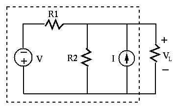

Instructions
The Problems
Hint: If the voltage between two nodes in a network is zero, then the two nodes can be connected without changing the voltages and currents in the network. (As there is no current between the two nodes.)
Solution: Due to the symmetry of the network, nodes a, b, and c are
at the same voltage and there they can be connected as a single node, the
same is true for nodes d, e, and f. The network between A and B is therefore
composed of two subnetworks each containing three resistors in parallel,
and the third subnetwork containing six resistors in parallel, the three
subnetworks are then connected in series. Therefore the total resistance is
Treat the resistor on the right in the circuit below as the load of a
one-port network. Find the Thevenin model of this network represented
by  and
and  in terms of the components given in the circuit.
Then find the Norton model
in terms of the components given in the circuit.
Then find the Norton model  and
and  of the network. HInt: pay
attention to the polarities labeled in the figure.
of the network. HInt: pay
attention to the polarities labeled in the figure.

Solution:
Hint: The two energy sources are at different frequencies. But
you can still use superposition theorem to find  .
.
Solution: Represent and as phasors:
At  , S switches from a to b. Find the voltage
, S switches from a to b. Find the voltage  across the
resistor for as the complete response to this event. Assume the
circuit is already in steady state when .
across the
resistor for as the complete response to this event. Assume the
circuit is already in steady state when .
Hints:
Solution: